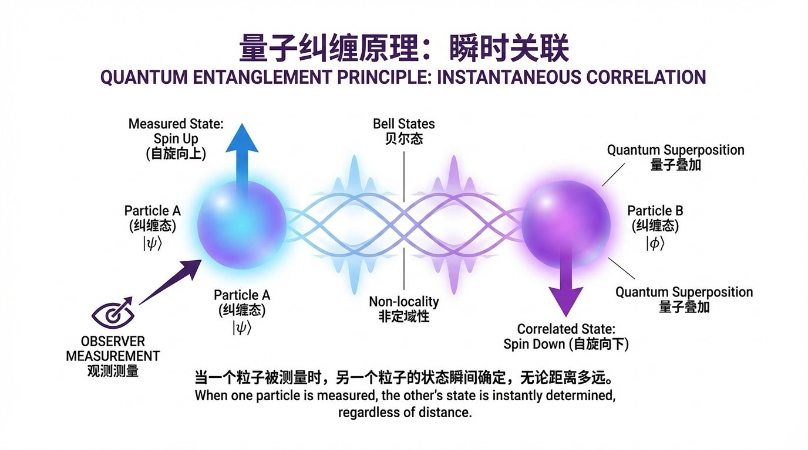
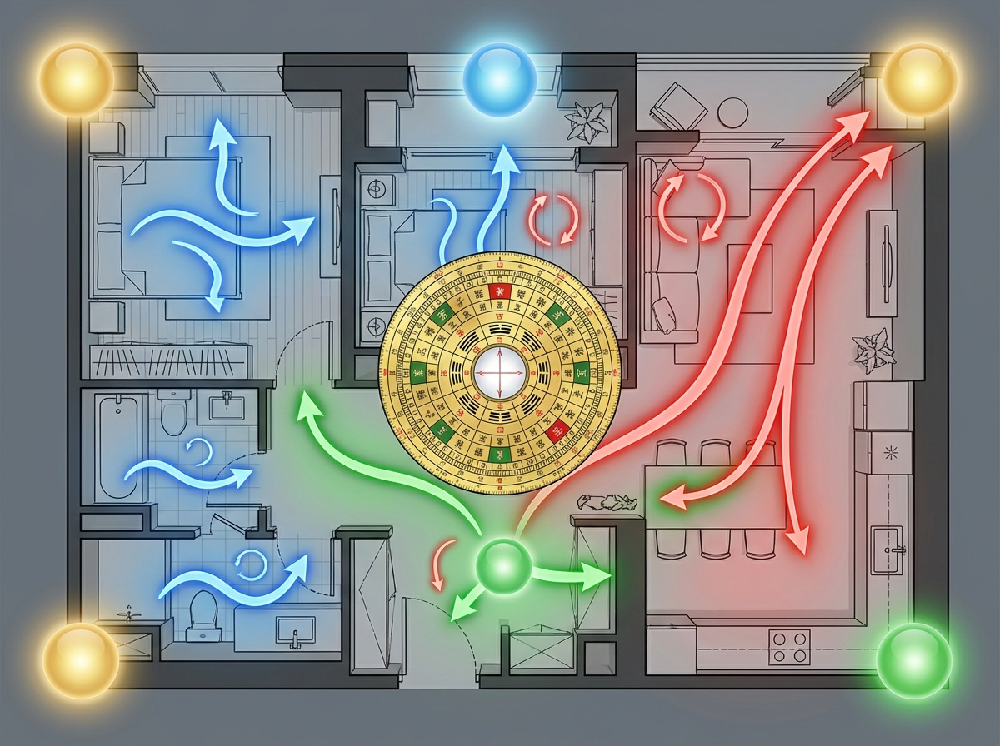
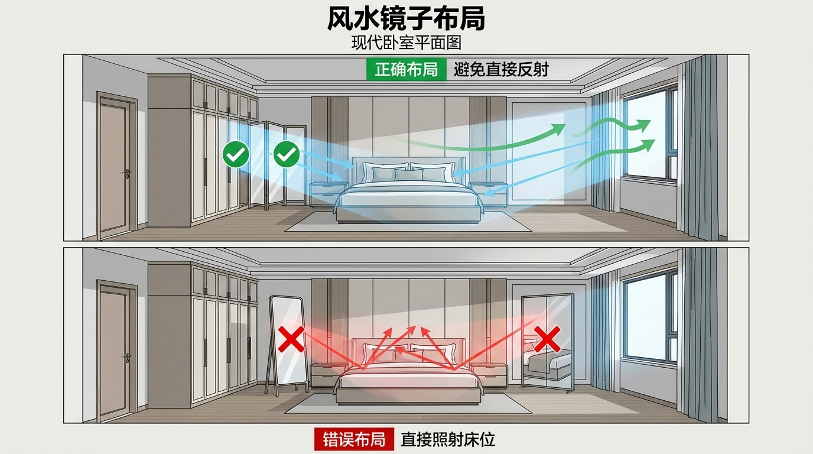
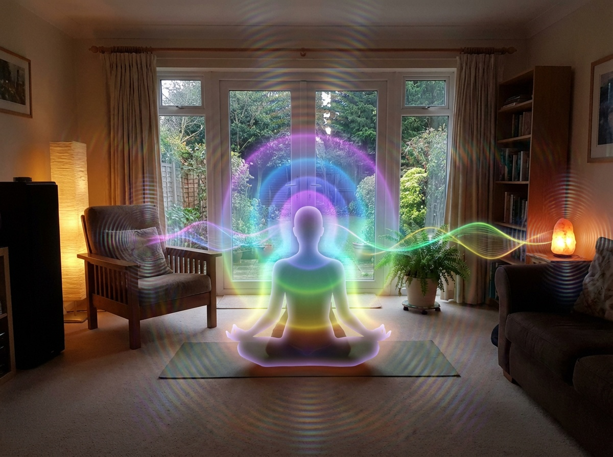
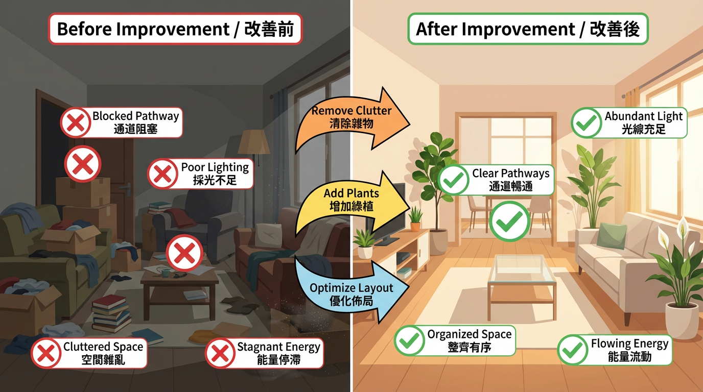
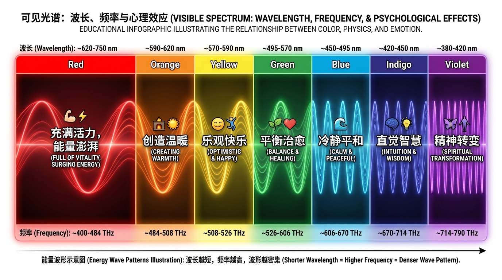
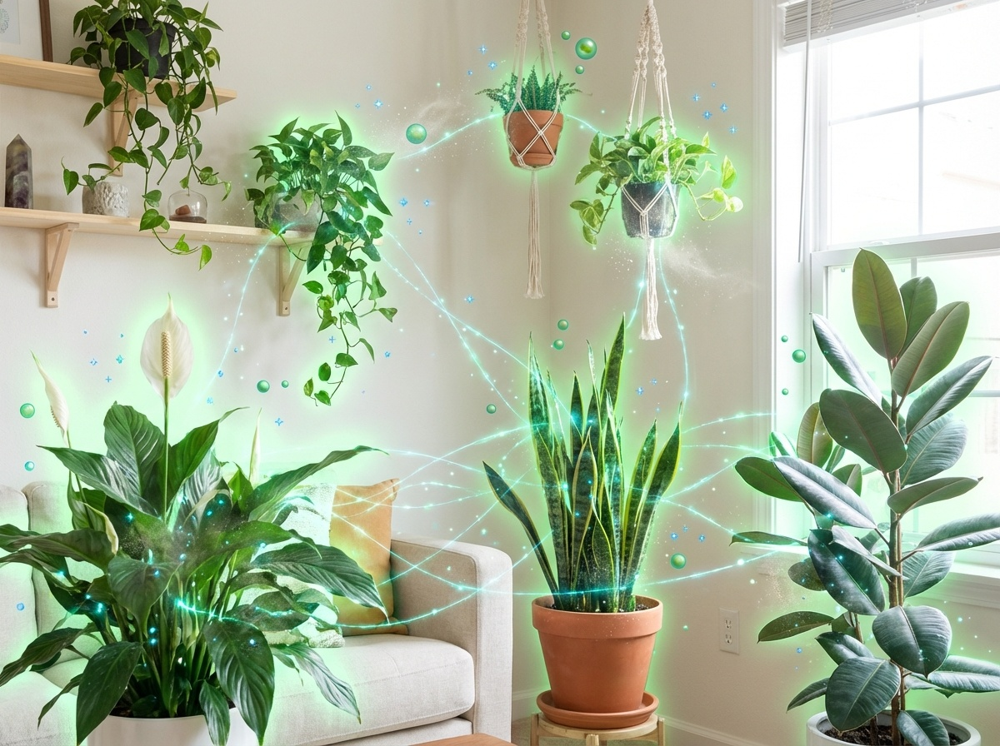

一、當量子物理遇見古老智慧
風水，這門傳承數千年的東方智慧，長久以來被許多人視為迷信。然而，隨著現代量子物理學的發展，科學家們驚訝地發現：風水所描述的「氣場」、「能量流動」等概念，與量子力學中的能量場理論有著驚人的相似性。
1935 年，愛因斯坦提出了「量子糾纏」的概念，他稱之為「鬼魅般的超距作用」（Spooky Action at a Distance）。這個現象顯示：兩個曾經相互作用的粒子，即使被分隔到宇宙的兩端，當其中一個粒子的狀態改變時，另一個粒子會瞬間產生對應的變化——完全不受距離限制。
這是否聽起來很像風水中所說的「氣場相連」、「一處動、全局應」？
為什麼現代科學開始重視環境能量場？
近年來，越來越多的科學研究證實：
- 人體確實存在可測量的生物電場（心臟磁場可達 3 英尺遠）
- 環境中的電磁波會影響人體細胞運作
- 空間布局確實會影響人的心理狀態和決策品質
- 物質的振動頻率會產生場域效應
二、量子糾纏的基本原理
什麼是量子糾纏？
讓我用一個簡單的比喻來說明：
想像一對雙胞胎，他們從出生那刻起就擁有某種神秘的連結。當哥哥在紐約感到開心時，弟弟在倫敦也會同時感到愉悅——即使他們相隔萬里，沒有任何通訊工具。這種超越空間的瞬時連結，就是量子糾纏的本質。
科學實驗的驗證
1982 年，法國物理學家阿斯佩（Alain Aspect）的實驗：
- 創造一對糾纏光子
- 將它們分離到 12 公尺遠
- 改變其中一個光子的偏振狀態
- 結果：另一個光子瞬間（<10⁻⁷秒）產生對應變化
2017 年，中國「墨子號」衛星實驗：
- 在地面和衛星之間（距離 1200 公里）實現量子糾纏
- 證實量子糾纏不受距離限制
- 開啟量子通訊新時代
關鍵要點：距離不影響能量連結
量子糾纏告訴我們：能量連結超越空間，瞬時反應，宇宙萬物在量子層面是相互關聯的。這正是風水理論的核心概念：萬物皆有連結，環境與人是一個整體系統。
三、風水能量場的量子解釋
傳統風水的「氣」就是能量場
在中國古代哲學中，「氣」是萬物的本源，是生命力的載體。風水學認為：
- 好的風水能「藏風聚氣」
- 氣的流動影響人的運勢和健康
- 環境布局決定氣的質量和流向
從量子物理學的角度來看，「氣」就是能量場——一種可測量、可影響的物理存在。
環境中的物質都在振動
量子力學告訴我們：所有物質都是由原子組成，原子內的電子不斷振動，振動產生頻率和能量場。
| 物質類型 | 振動特性 | 能量效應 |
|---|---|---|
| 木材 | 中頻、溫和 | 溫暖、生機 |
| 金屬 | 高頻、銳利 | 清冷、剛硬 |
| 水晶 | 規則、穩定 | 聚焦、放大 |
| 織物 | 低頻、柔軟 | 柔和、吸收 |
| 玻璃 | 高頻、反射 | 擴散、反彈 |
案例：為什麼鏡子擺放位置很重要？
量子反射原理：鏡子是一個「能量反射器」，它會：
- 反射光波：改變空間的光線分布
- 反射能量場：將能量彈射回原處或其他方向
- 創造虛擬空間：產生空間延伸感，影響心理感知
❌ 鏡子對床的問題
- 睡眠時人體能量場最弱
- 鏡子反射形成能量干擾
- 夜間朦朧中看到鏡像產生驚嚇
- 科學證據：研究顯示鏡子對床的人睡眠品質降低 23%
✅ 正確擺放
- 放在側牆（不直接對人）
- 反射美景或明亮區域（引入正能量）
- 避開門窗對沖（不讓能量直接反彈出去）
四、人與空間的量子共振
人體也是能量系統
人體不只是血肉之軀，更是一個複雜的生物電能系統：
可測量的生物電場：
1. 心臟磁場
- 強度：地球磁場的 5000 倍
- 範圍：可延伸至身體外 3-4 英尺
- 頻率：隨情緒變化（平靜 vs 壓力）
2. 大腦電波
- Alpha 波（8-13 Hz）：放鬆、冥想
- Beta 波（13-30 Hz）：清醒、專注
- Theta 波（4-8 Hz）：深度放鬆、創造力
- Delta 波（0.5-4 Hz）：深度睡眠
科學證據：心率變異度與環境能量
HeartMath 研究所的研究顯示，不同環境對人體自律神經有直接影響：
| 環境類型 | HRV 變化 | 健康影響 |
|---|---|---|
| 自然環境（森林、海邊） | +32% | 極度放鬆、恢復力強 |
| 優化室內空間 | +18% | 舒適、專注力提升 |
| 普通辦公室 | 基準 | 一般狀態 |
| 雜亂擁擠空間 | -23% | 壓力增加、效率降低 |
| 強電磁場環境 | -41% | 焦慮、健康風險 |
五、實用應用：如何運用量子原理改善居家風水
技巧 1：觀察能量流動
空氣流動 = 能量流動
每天通風兩次：
- 早上：7:00-9:00（陽氣上升時）
- 傍晚：17:00-19:00（陰陽交替時）
- 每次至少 15-20 分鐘
創造對流：
- 打開對向的窗戶
- 不要只開一扇窗（無法對流）
- 使用風扇輔助（低速、柔和）
技巧 2：物品擺放
減少尖角、增加圓潤形狀
❌ 避免或化解：
- 家具尖角對人（尤其床頭、座位）
- 裝飾品有尖銳突出
- 建築結構的尖角柱
✅ 推薦物品：
- 圓形茶几（優於方形）
- 橢圓形餐桌（促進和諧）
- 弧形沙發（環抱聚氣）
技巧 3：色彩選擇
不同色彩有不同振動頻率
| 空間 | 推薦色彩 | 效果 |
|---|---|---|
| 臥室 | 藍、綠、淺紫 | 放鬆休息、改善睡眠 |
| 客廳 | 米白、淺橙、淺黃 | 溫暖歡迎、促進交流 |
| 書房 | 白、淺藍、淺綠 | 清晰思考、提升專注 |
| 廚房 | 白、淺黃、淺綠 | 清潔衛生、充滿活力 |
技巧 4：植物能量
活體植物提升空間能量
| 植物名稱 | 風水功效 | 科學效益 | 擺放位置 |
|---|---|---|---|
| 發財樹 | 招財、事業運 | 淨化空氣、增加濕度 | 客廳財位、辦公室 |
| 虎尾蘭 | 保護、淨化 | 夜間釋氧、吸甲醛 | 臥室、任何空間 |
| 黃金葛 | 旺財、化煞 | 強力淨化、易養護 | 走道、轉角處 |
| 富貴竹 | 節節高升 | 增加濕度、優雅 | 書房、辦公桌 |
技巧 5：定期清理
移除不需要的物品（能量堵塞）
清理原則：
- 一年內未使用 = 移除
- 不喜歡或壞掉 = 立即丟棄
- 每季進行一次大清理
- 建立「一進一出」原則
清理後的能量淨化：
- 開窗通風
- 用鼠尾草或艾草煙燻
- 播放高頻音樂（528Hz）
- 用鹽水拖地淨化
六、結語：科學與智慧的完美融合
風水，不需要被神秘化，也不應該被完全否定。當我們用量子物理學的視角重新審視這門古老智慧時，會發現：
風水的本質是環境能量學
- 氣場 = 量子能量場
- 共振 = 頻率匹配
- 流動 = 能量循環
- 平衡 = 系統和諧
無論你是否完全理解量子力學，都可以從今天開始，觀察、實驗、記錄、優化你的生活空間。
本週行動清單：
- 每天開窗通風 2 次
- 清理一個雜物堆積區
- 調整一個尖角對人的位置
- 添加一盆綠色植物
- 觀察並記錄空間能量變化
風水不是玄學，而是可體驗、可驗證的環境科學。當你調整空間能量後，可能會注意到睡眠品質改善、思緒更清晰、家人關係更和諧、事業或學業更順利。這些改變不是巧合，而是量子共振的自然結果。